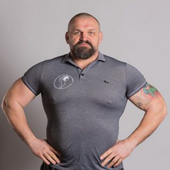

Федерація Стронгмену України
Громадська організація «Федерація стронгмену України» є колективом однодумців, які поділяють ідею, принципи, цінності та статут федерації. Головною метою є розвиток виду спорту Стронгмену в Україні і світі. Федерація є членом міжнародної федерації — World Strongman Federation. Організація має 15 чинних осередків та 9 тренувальних баз у різних регіонах України.
Керівництво Федерації Стронгмену України
Сергій Конюшок (м. Київ)
Президент федерації
Сергій Конюшок – чемпіон та рекордсмен світу зі стронгмену, президент ГО “Федерація стронгмену України“, МСУМК, заслужений тренер України, заслужений працівник фізичної культури та спорту України, “Магістр фізіології спорту“, генеральний продюсер телепроекту “Богатирі стронгмен-шоу“, засновник фітнес-додатку FitStar, експерт в галузі спорту та фітнесу.
Василь Вірастюк (м. Київ, Івано-Франківськ)
Почесний президент
ЗМС, дворазовий чемпіон світу та володар титулу “World Strongest Man”, чотириразовий чемпіон світу у команді, рекордсмен України та світу.
Богатирі України
Рекорди
Рекорд з перетягування літака Ан-225 Мрія
8 українських атлетів 26 серпня 2021 року встановили рекорд з перетягування найбільшого у світі вантажного літака Ан-225 «Мрія». Рекорд присвятили 30-літтю Незалежності України та 75-річчю ДП «Антонов». Рекорд встановлювали на аеродромі «Антонов» у селищі Гостомель Київської області.
Богатирі перетягували літак з паливом вагою 330 тонн. Спортсменам вдалося перетягнути Ан-225 на 4 метри 30 сантиметрів за 1 хвилину та 13 секунд. До речі, напередодні богатирі здійснили 7 тренувань. Найбільше вони протягнули літак на 10 сантиметрів, тому рекорд 26 серпня став для них справжньою несподіванкою.
У встановленні рекорду взяли участь:
- Сергій Конюшок
- Олександр Лашин
- Богдан Ксенчук
- Денис Дубровський
- Сергій Пономарьов
- Володимир Рекша
- Денис Бережник
- Віталій Герасимов
Вправи
-
Вправи динаміка
- Супер йок (Super Yoke)
- Айсленд кросс
- Качка
- Таєр фліп (Tyre Flip)
- Тяга санчат
- Йок-керінг
-
Вправи оверхед
- Лог-ліфт (Log Lift)
- Аксель
- Дамбл (Dumble)
- Вікінг прес
- Фронт холд
- Йок-пресс
-
Вправи хват
- Прогулянка фермера (Farmer Walk)
- Тімбер
- Холд
- Качка
-
Спина
- Тяга акселя
- Тяга платформи
- Тяга штанги
- Кулі Атласа
- Лоадінг
-
Класичні вправи
- Трек пул
- Арм овер арм
- Присідання з патформою
- Куля на плече
- Пул пуш
Правила спортивних змагань зі Стронгмену
Log Lift
Атлет, після стартового сигналу судді, піднімає лог-ліфт з підлоги, фіксуючи над головою (1 сек). Лікті та коліна мають бути випрямленими, стопи в одну лінію. Після команди судді, атлет повертає снаряд у вихідне положення.
Dumble
Снаряд знаходиться на підлозі (на подушці). Атлет підходить до навантаженого снаряду. За сигналом судді атлет має підняти снаряд на випрямлену руку та зафіксувати над головою (фіксація одна секунда), лікті, коліна випрямлені, стопи паралельні. Після сигналу судді повернути снаряд у В.П.
Super Yoke
Снаряд знаходиться на стартовій ліній, так, щобпроєкція перетинки співпадала зі стартовою лінією. Спортсмен підходить впритул до снаряда, впираючись трапецією в перетинку. За сигналом судді піднімає снаряд та долає дистанцію, доки середина снаряду не перетне фінішну лінію. Перемагає атлет, який пройде задану дистанцію в найкоротший час. Якщо атлет не вклався у відведений тайм ліміт, фіксується пройдена відстань.
Tyre Flip
Покришка стоїть на стартовій позиції вертикально. Атлет за сигналом судді штовхає покришку вперед, після того, як покришка займе горизонтальне положення на підлозі, ведеться лік перекидань. Спортсмени, які не змогли перекантувати покришку відповідну кількість разів за відведений тайм ліміт, своїм результатом вважають кількість перекидань.
Farmer Walk
Атлет бере в обидві руки валізи і за сигналом судді починає рух вперед. При закінчені вправи атлет має занести валізи за фінішну лінію повністю.